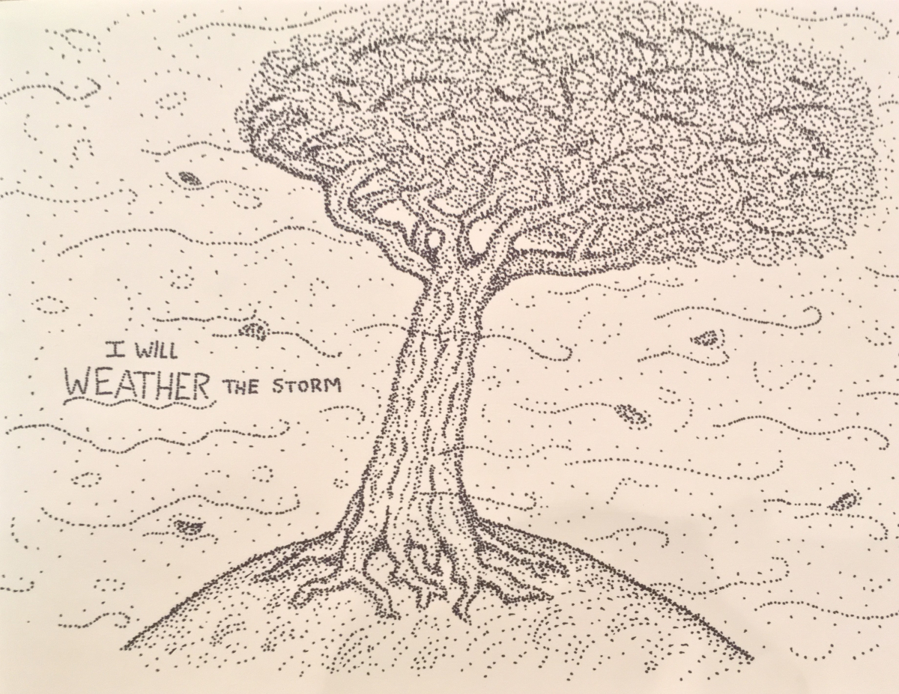
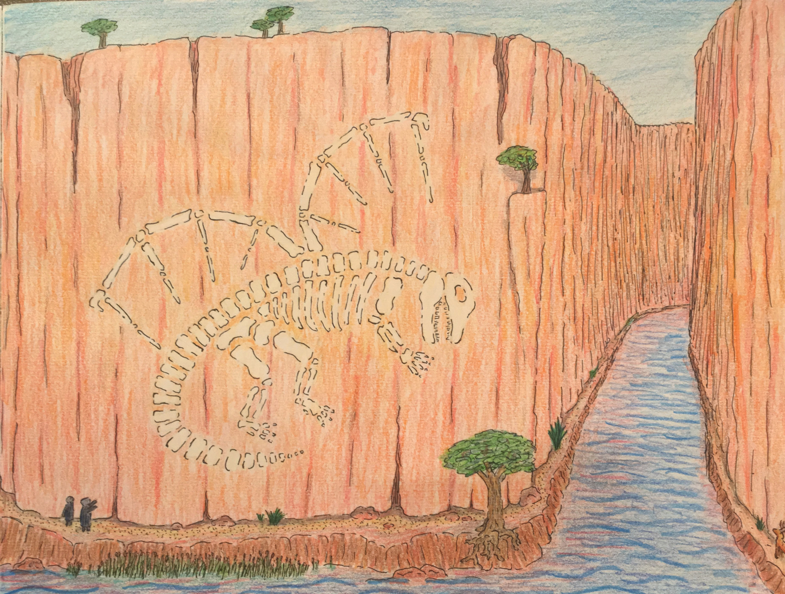
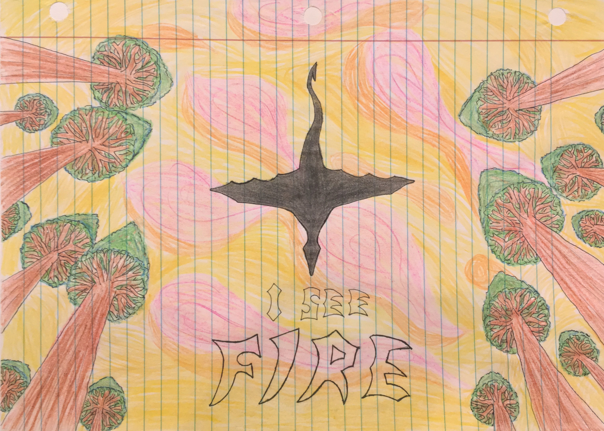
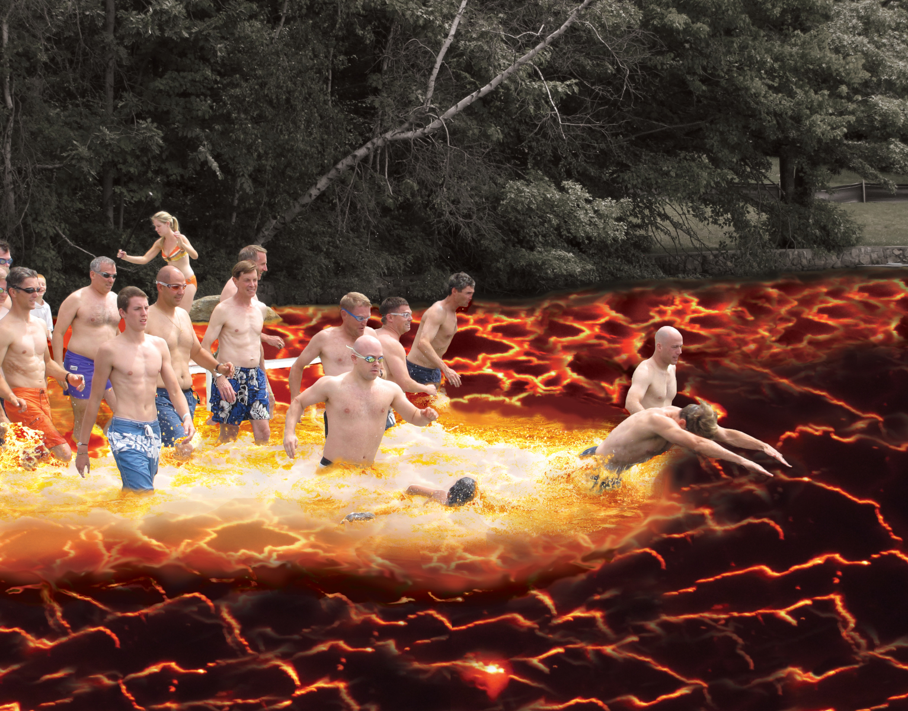
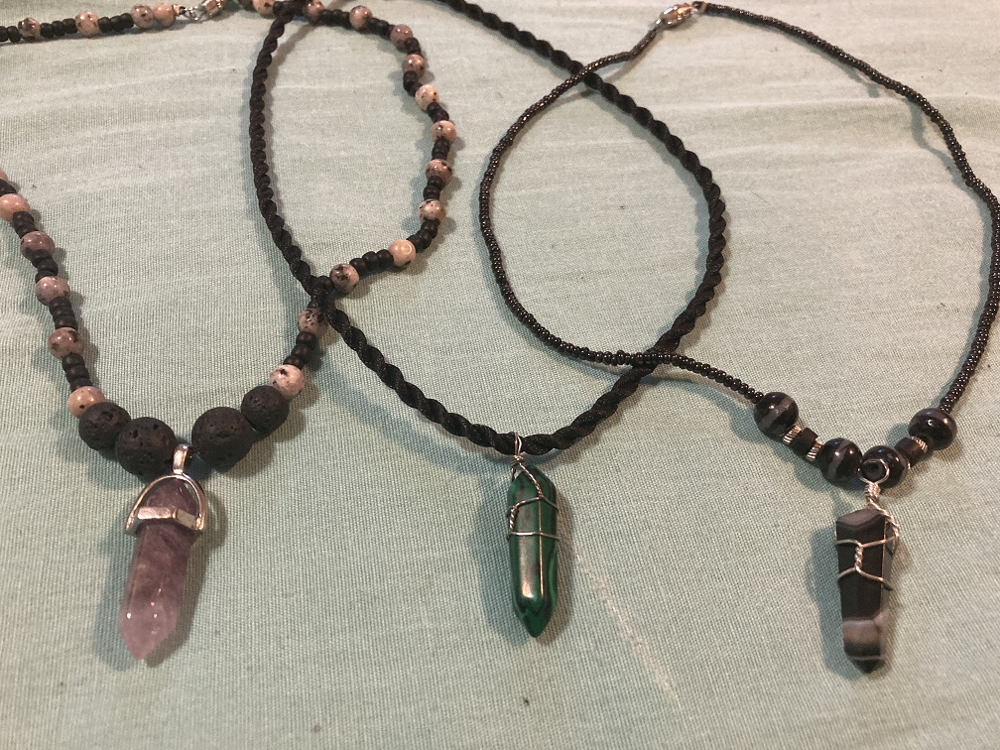
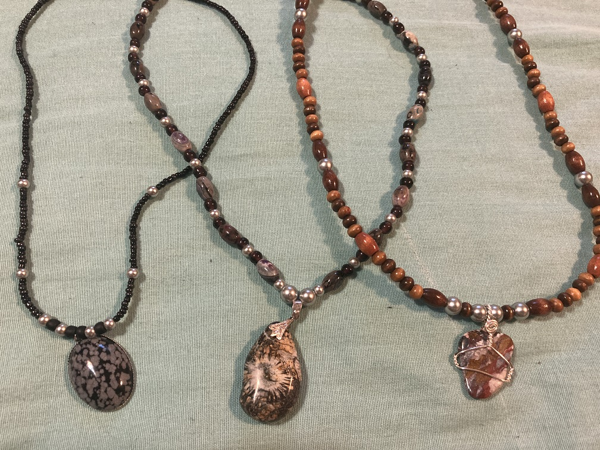
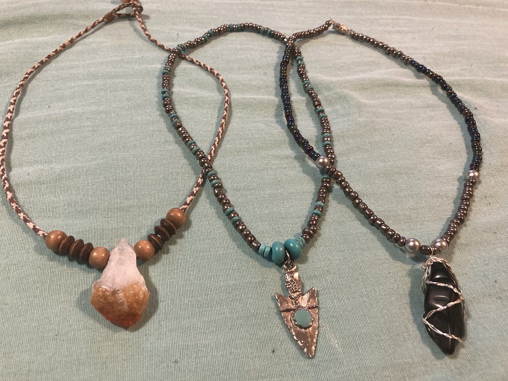

Artwork
Introduction
While I wouldn't say that I have "special" talent, I enjoy working on small artistic projects. This page includes a few examples of my personal art style.
In high school I was introduced to Photoshop, Illustrator, and other Adobe sotfware. Again, while I'm no expert, I enjoy spending time making interesting pieces. Some of my digital artwork is shown below.
Lastly, I enjoy making and wearing necklaces. These require patience and decent hand-eye coordination. A few of the necklaces I've made are featured here :)
Conventional Art

© 2018 (Monocolor Stippling Art)

© 2018

© 2018
Digital Art


© 2015 (My first Photoshop project)
Jewelry Art

Amethyst, Malachite, Onyx

Snowflake Obsidian, Granite, Jasper

Cistine, Arrowhead, and Obsidian